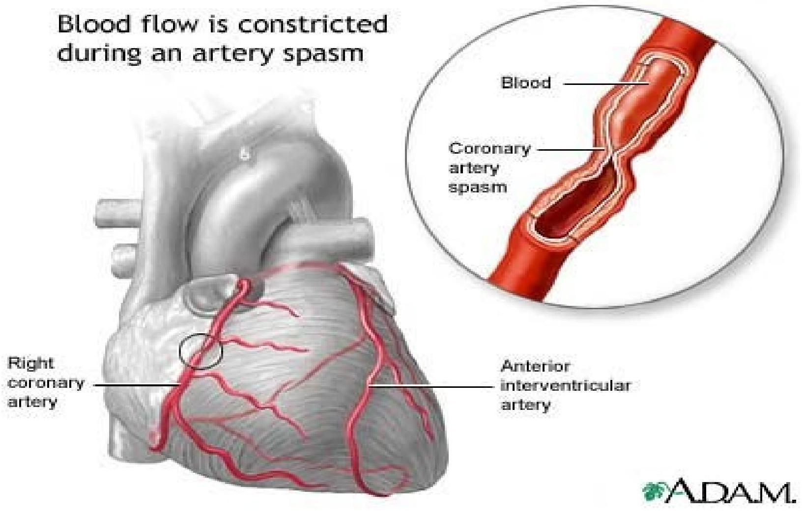

CORONARY HEART DISEASE (CHD)
Definition
CHD is myocardial impairment due to an imbalance between coronary blood flow and myocardial oxygen requirements caused by changes in the coronary circulation.
Manifestations
- Myocardial ischaemia (Angina Pectoris)
- Myocardial Infarction (M I myocardial cell death)
Forms
- Acute (cardiac arrest)
- Chronic
- Silent M I (when people just die)
Causes
- Organic disease
- Associated with changes in structure e.g.
- Atherosclerosis
- Thrombosis
- Associated with changes in structure e.g.
- Functional changes
- No physical cause can be found e.g.
- Coronary artery spasm
- No physical cause can be found e.g.
CHD also includes
- Arteriosclerosis
- Atherosclerosis
- Pulmonary embolism
It causes occlusion of blood flow, either partial, leading to ischaemia, or complete, leading to infarction
Ischaemia is reversible, but if myocardial blood flow is not increased or myocardial oxygen demands reduced, ischaemia progresses to myocardial infarction.
ANGINA PECTORIS
Definition
A clinical syndrome produced by a reduction in the blood supply to the heart muscle, caused by a narrowing or partial occlusion of the coronary arteries
Pathophysiology
When a muscle has to work with deficient oxygen, a severe cramping pain occurs (see Claudication)
This pain, due to oxygen deficiency, is common to all muscles
Signs / Symptoms
- Severe gripping pain behind the sternum, which radiates down the left arm, right arm, neck and sometimes upper abdomen
- It may be triggered by bending or climbing stairs especially in cold weather
- The patient stops, and after about a minute or so, the pain goes away
- Tightness in the chest
- Profuse perspiration
- Pallor
- Flushing of the face
- Dyspnoea
Causes
- Arteriosclerosis of coronary arteries which become too narrowed to provide adequate blood supply to the heart muscle
- High blood pressure leading to enlargement of the heart and greater oxygen requirements
- Aortic aneurysms or stenosis
- Severe anaemia (with ischaemia)
MANAGEMENT
- Avoidance of
- Sudden physical exertion
- Emotional upsets
- Exposure to cold
- Drugs
- Vasodilators
- Glyceryl nitrate (Trinitrin)
- 0.5 mg (tablet) chewed or dissolved under the tongue
- Glyceryl nitrate (Trinitrin)
- Beta-blockers - to block the constricting effects of adrenaline and slow the heart rate e.g.
- Propranolol (Inderal): 10-30 mg 3-4 times / day before meals and at bedtime
- Sedatives: to relieve anxiety
- Diazepam: 4-30 mg (or as prescribed)
- Vasodilators
- Diet:
- low calorie for the obese to reduce weight and strain on the heart
- Light meals as heavy meals increase workload on the heart
- Treatment for hypertension
MYOCARDIAL INFARCTION (M I) (HEART ATTACK)
Definition
Myocardial infarction is an area of necrotic tissue in the myocardium resulting from obstructed blood supply from the coronary artery to the area
MIs can occur in any chamber and in the layers of the heart, but most occur in the left ventricle because its oxygen need is very great
Clinical Features
- Either severe prolonged chest pain or burning sensation in the chest or
- Crushing pain of sudden onset (1530 minutes) with cardiac arrest
- Pallor
- Diaphoresis
- Anxiety
- Nausea and vomiting / indigestion
- Syncope (sudden fainting from loss of strength)
- Signs of shock
- Tachycardia
- Hypotension
- Cold, clammy skin
- Palpitations
- Arrhythmia
- Dyspnoea
Diagnosis
- History of
- Severe, sudden chest pain or
- Persistent pain
- Electrocardiogram (ECG)
- Serum enzyme (transaminases) changes indicating muscle necrosis
MANAGEMENT
First Aid (Pre-Hospital care)
- Relief of pain
- Restoration of myocardial blood flow through resuscitation to reduce infarct size
- Oxygen administration to relieve dyspnoea
- Prevention of shock and complications
In Hospital
On admission
- Brief history is taken
- Complete bed rest
- Oxygen administration for hypoxia 2-4 litres / min of pure oxygen by mask for 2-3 days
- Total nursing care
- Cardiac monitoring - ECG
- Vital signs and apex beat
- Intravenous line is established for emergency drug administration
- Drugs
- Pain relief
- Morphine (is the drug of choice) 10 mg - 15 mg prn
- Relieves pain, anxiety and restlessness
- Reduces activity of the autonomic nervous system, hence reducing myocardial oxygen consumption
- Dilates arteries and veins
- Reduces work of breathing
- Slows the heart rate
- Diamorphine
- 5-10 mg SC or lesser dose IV
- Vasodilator: to reduce artery spasm
- Nitroglycerin: 0.5 mg in tablet form, chewed or dissolved under the tongue
- Isosorbide dinitrate (Isordil): 2.5 mg - 30 mg PO qid chewed
- Anticoagulants: to stop or slow progression of thrombi and prevent new ones forming and to prevent pulmonary embolism
- Heparin: 5000 units SC 8-12 hourly until 2-3 days before discharge. Higher doses may be given to those with high risk of embolism
- Aspirin: 80 mg - 325 mg daily for those without history of PUD
- Prevention of Arrhythmias
- IV Lidocaine: 1 mg / kg stat, then
- 2 mg / min as prescribed, then
- Continuous infusion 2-4 mg in 24 hours
- Thrombolysis: to limit infarct size
- Streptokinase IV - will lyse all clots in the body
- 10,000-30,000 units initially, then
- 3,000-4,000 units for 2 hours until the clot lyses
- Infusion is continued for 15 - 60 minutes after lysis to maintain patency
- Total dose : 150,000-500,000 units
- Heparin is then introduced later, followed by
- Warfarin orally
- Pain relief
- Ambulation progression is ordered by the physician
- Observe for and prevent injury in case of bleeding
Prognosis
- 60 % of deaths occur within the first hour
- In hospital, most deaths are to heart failure and shock within 3-4 days after the onset of MI
Complications of MI
- Arrhythmias
- Heart failure depending on the size of the infarct
- The dead heart muscle is replaced by a fibrous scar.
- If it is too large, the force of the heartbeat may be adversely affected and the heart will fail
- Pulmonary embolism
- Structural heart problems
- Rehabilitation depending on effect of MI
- To continue with medication if any
- Advice on
- Exercise
- Prevention
PULMONARY HEART DISEASE
The right ventricle has to propel blood through the pulmonary circulation.
When this circulation is impeded, a strain is imposed on the work of the heart, affecting the lungs
PULMONARY EMBOLISM
- Occurs mostly due to a detached blood clot (thrombus) from thrombosis of a deep vein (DVT) in the leg or the pelvis, travels in the veins and lodges in the pulmonary artery or its branches
- Blood flow to the lungs and oxygenation is reduced or stopped
- A massive pulmonary embolus causes infarction of the lung or parts of the lung depending on the site causing
- Sudden tightness in the chest
- Breathlessness
- Collapse or
- Death
- Smaller emboli might cause very little symptoms immediately but later are associated with
- Increasing breathlessness
- Haemoptysis
Prevention
- Minimize risk of venous thrombosis by
- Early movement of legs postoperatively
- Early exercises in the elderly
- Anticoagulant therapy if there is evidence of thrombosis
- Heparin
- Phenindione (Dindevan)
- Initial dose: 100mg-150 mg x 2 on day - Day One
- Then dose adjusted to prothrombin time
MANAGEMENT
- Emergency surgery may have to be done (if there is time)
- Oxygen to relieve dyspnoea
- Sedatives for pain
- Pethidine: 50 mg - 100 mg
- Morphine: 10 mg - 30 mg
- Total nursing care
CORE PULMONALE
This is a form of heart failure occurring in patients with lung disease (COPD) e.g.
- Chronic bronchitis
- Emphysema
The lungs cannot supply enough oxygen
- This affects the heart
- The heart may fail
- Heart failure makes worse an already impaired pulmonary function
The patient becomes very cyanosed
Oedema and ascites are common Diuretics may be given but relief will depend on the state of the lungs
CORONARY ARTERY SPASM
The smooth muscle fibres in the coronary arterial walls contract and temporarily narrow the vessel lumen (see functional cause of CHD), resulting in myocardial ischaemia, and may contribute to the development and size of myocardial infarction (MI) (see Nitroglycerin in MI)
Causes
- Smoking
- High blood cholesterol
- Hypertension
Predisposing Factors / Triggers
- Alcohol withdrawal
- Emotional stress
- Vasoconstrictors
- Stimulant drugs e.g. amphetamines, cocaine
Cause of Coronary Heart Disease
Unknown
Predisposing and Risk Factors
- Major
- Cigarette smoking
- Hypertension
- High fat diets
- Emotional stress
- Unavoidable Risk Factors
- Age:
- In men - increasing age
- In women - menopause
- Gender
- Family history of CHD
- Ethnic background
- Age:
- Avoidable Risk Factors
- NB: Risk factors of CHD can be modified by controlling avoidable risk factors
- Cigarette smoking
- Physical inactivity (sedentary lifestyle)
- Obesity
- Emotional stress
- Increases need for oxygen, amounts of food eaten, cigarette and alcohol use
- Oestrogen / Progestin therapy
- Risk increases with age and smoking
- Alcohol
- Raises heart rate and increases myocardial oxygen consumption
- Risk Factor Combination
- The greater the number of risk factors combined, the greater is the risk of developing coronary heart disease (CHD)